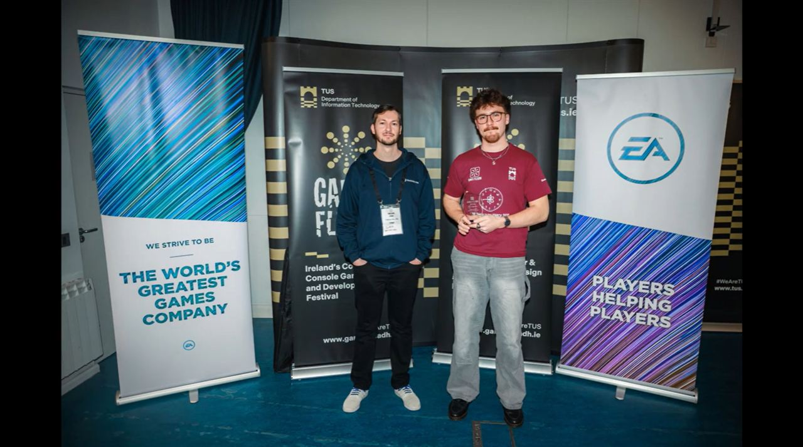
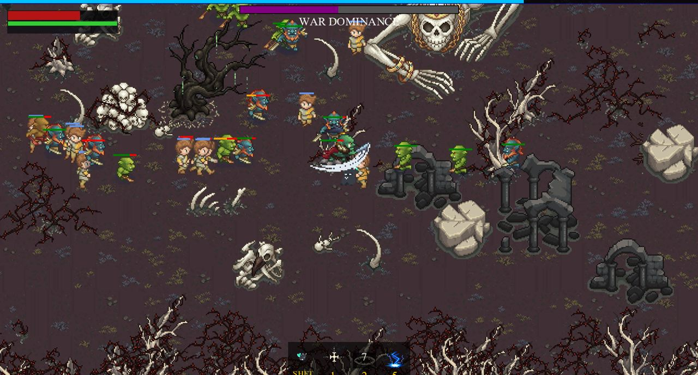

Pale Roots
A sci-fi roguelike on a custom 2D engine, where you use the power of dead enemies to grow stronger.
- Role
- Solo developer
- Tech
- C#, MonoGame
- When
- Dec 2025 to Mar 2026


-
Award-winning enemy AI
Pale Roots won the EA-sponsored Best Use of AI award at Games Fleadh 2026. I built the whole game solo in MonoGame, with no commercial engine underneath.
-
Armies that spread out instead of swarming
Every unit runs a small state machine (Wander, Chase, Combat, Hurt) behind an
IAIStateinterface. Targeting is centralised: every 500 ms, units without a valid target pick the nearest enemy that has fewer than two attackers already, so fights break into duels rather than one big pile. -
An engine built from scratch
A pushdown stack of game states handles menus, cutscenes and level-ups. Combat broadcasts C#
Actionevents, so the UI and audio listen without the combat code knowing they exist. Arenas are 60×34-tile maps, filled procedurally from data.